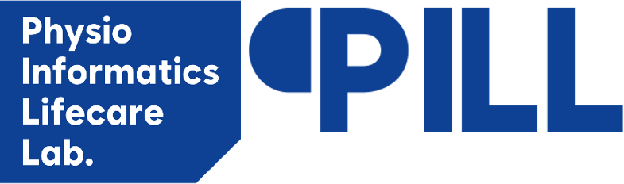

강한 인과추론, 낮은 현장성
무작위 배정과 엄격한 통제로 robust causal evidence를 확보하지만, 비용과 기간, 대표성 한계가 큽니다.
2026 AI Co-Scientist Challenge Korea
TEAM 3
Multi-agent collaboration for Target Trial Emulation on real-world data.
실제 의료 데이터를 활용해 기존 임상시험을 가상 재현하고, 연구자의 설계, 매핑, 추출, 분석, 보고 과정을 하나의 파이프라인으로 압축합니다.
What We Do
We emulate landmark trials on real-world patient data by translating clinical protocol language into structured cohorts, standardized concepts, causal analysis, and publication-ready evidence.
무작위 배정과 엄격한 통제로 robust causal evidence를 확보하지만, 비용과 기간, 대표성 한계가 큽니다.
EMR과 청구 데이터는 풍부하지만, 전문가 수작업 없이 신뢰 가능한 인과추론으로 연결하기 어렵습니다.
실사용 관찰 데이터에서 가상의 무작위 임상시험을 설계·실행해, 임상적으로 해석 가능한 실사용 근거를 생성합니다.
System Overview
Six specialized agents coordinate through explicit state objects rather than a single oversized prompt, which keeps the workflow reproducible and reviewable.
Human-in-the-loop checkpoints와 재실행 피드백을 담당합니다.
PICO와 적격 기준을 조건 단위로 해석
Output: criteria_structUMLS 및 OMOP Concept ID로 확장·정제
Output: concept_setsOMOP CDM SQL을 생성·실행해 군을 구성
Output: cohort_sqlPSM, IPTW, survival analysis를 자동 수행
Output: analysis_specKM, HR, 포레스트와 자동 리포트를 생성
Output: report_assetsKey Results
The booth version focuses on the three numbers visitors can remember in under a minute: mapping accuracy, landmark trial reproduction, and sub-20-minute workflow.
OHDSI ATLAS 기준으로 단일 GPT 5.4 대비 precision / recall 모두 개선
LEADER · PLATO · ARISTOTLE를 end-to-end pipeline으로 검증
자연어 한 줄 입력 → 에이전트 협업 → 결과 산출까지 압축
Concept Mapping
기존 RAG/단일 LLM 접근보다 concept set mapping precision과 recall이 모두 일관되게 향상되었습니다.
Pipeline Integrity
End-to-End 파이프라인만으로 LEADER, PLATO, ARISTOTLE을 재현하고 Gold Standard와 일치하는 HR 경향을 확인했습니다.
Liraglutide vs Placebo
HR 경향 일치Ticagrelor vs Clopidogrel
HR 경향 일치Apixaban vs Warfarin
HR 경향 일치설계 → 추출 → 분석 → 보고 전 과정을 자동화하여 pipeline integrity를 확인했습니다.
Built on OHDSI
Atlas, WebAPI, Achilles 등 OHDSI 표준 스택과 정합성을 유지해 별도 재학습 없이 다기관 확장 가능성을 염두에 두고 설계했습니다.
Demo
부스 현장에서 보여준 시스템 흐름을 담은 5분 시연 영상입니다.
Roadmap
From visualization tools for clinicians to multi-hospital validation and national data linkage.
임상의가 코호트, 결과, 통계 파이프라인을 직접 검토하고 수정할 수 있는 인터페이스를 개발합니다.
2026년 5월부터 상급종합병원 3개 이상에서 실제 임상 데이터로 유효성을 검증합니다.
HIRA 및 보건의료 빅데이터와 연결해 전국 규모 실사용근거 분석으로 확장합니다.
Contact
TEAM 3 contact and collaborating labs.
Official Team Contact
Primary contact for the booth landing page: Team Lead 김영현
TEAM 3는 서울대학교 BILab, 동아대학교 PILL, 고려대학교 PathfinderLab으로 이뤄진 팀입니다.
Collaborating Labs
